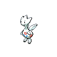

📖 英語版の図鑑説明
No records exist of Togetic being seen in the wilds. Rumors abound that it evolves under the loving care of a trusted human companion, upon whom the Pokémon then bestows great joy.
日本語訳
トゲチックが野生で目撃された記録はない。信頼できる人間の愛情深い世話の下で進化し、その人に大きな喜びを与えるという噂が広まっている。
💡 英語名「Togetic」の由来
英語名「Togetic」は、chick（ひよこ）がもとになっていると考えられている。
出典 Bulbapedia
📊 トゲチックの種族値
HP55
こうげき40
ぼうぎょ85
とくこう80
とくぼう105
すばやさ40
合計 405
❓ よくある質問
- トゲチックの英語名は？
- トゲチックの英語名は「Togetic」です。
- トゲチックの英語名「Togetic」の由来は？
- 英語名「Togetic」は、chick（ひよこ）がもとになっていると考えられている。
- トゲチックは英語版の図鑑でどう説明されている？
- 「No records exist of Togetic being seen in the wilds. Rumors abound that it evolves under the loving care of a trusted human companion, upon whom the Pokémon then bestows great joy.」と書かれています。日本語にすると「トゲチックが野生で目撃された記録はない。信頼できる人間の愛情深い世話の下で進化し、その人に大きな喜びを与えるという噂が広まっている。」という意味です。
トゲチックは第2世代（ジョウト地方）のポケモンです。第2世代（ジョウト地方）の英語名一覧 →